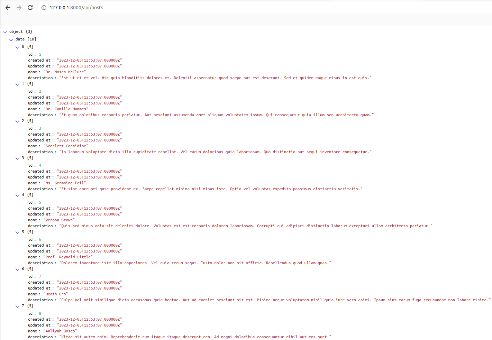

LARAVEL ORION
INTRODUCTION
Laravel Orion allows you to build a fully featured REST API based on your Eloquent models and relationships with simplicity of Laravel as you love it.
FEATURES
REST API for models and relationships with batch operations support
Advanced searching capabilities with sorting, filtering, and keyword search
Automatic OpenAPI specifications generation
Comprehensive set of endpoint hooks
Relations inclusion and soft deletes via query parameters
Straightforward authorization and validation
Responses transformation via API resources
OPERATIONS PROVIDED BY ORION REST APIs
index
search
show
store
update
destroy
restore
batchStore
batchUpdate
batchDestroy
batchRestore
REQUIREMENTS
PHP >= 7.3 Laravel >= 5.7
CREATE LARAVEL PROJECT
Create a new project using composer :
composer create-project --prefer-dist laravel/laravel your_project_name
INSTALLATION
Laravel Orion can be installed into a new or existing project, simply by adding a composer dependency :
composer require tailflow/laravel-orion
php artisan vendor:publish --tag=orion-config
SIMPLE CRUD
Create a Model with it’s controller, migration, factory and seeder :
php artisan make:model Post -a
Populate the database Post table
Add two columns in the CreatePostsTable migration :
$table->string('name');
$table->text('description');
Add some fake data in the database posts table using factories
In the database/factories/PostFactory.php add the following code in the return array :
return [
'name' => $this->faker->name,
'description'=> $this->faker->text
];
Now call the PostFactory from the Database Seeder :
\App\Models\Post::factory(10)->create();
Run the following command to run the migrations and Seeders :
php artisan migrate --seed
Note
If the table already exists, drop the tables and rerun the migrations by running
php artisan migrate:fresh --seed
Make the app/Http/Controllers/PostController.php extend OrionHttpControllersController
And define protected $model property :
<?php
namespace App\Http\Controllers;
use Orion\Http\Controllers\Controller;
use Orion\Concerns\DisableAuthorization;
use App\Models\Post;
class PostController extends Controller
{
use DisableAuthorization;
/**
* Fully-qualified model class name
*/
protected $model = Post::class; // or "App\Models\Post"
}
Register the route in api.php by calling Orion::resource
<?php
use App\Http\Controllers\PostController;
use Illuminate\Support\Facades\Route;
use Orion\Facades\Orion;
Route::group(['as' => 'api.'], function() {
Orion::resource('posts', PostController::class);
});
In the terminal run the following command to list all the routes
php artisan route:list
Hit of the GET route
